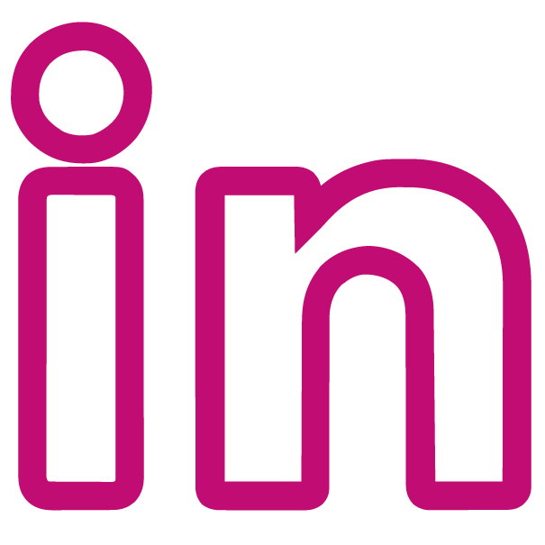

Hei, jeg heter Tuva!
Jeg er en 24 år gammel nyutdanna designer med bachelor i grafisk design, og er for tiden bosatt i Gjøvik. Høsten 2024 startet jeg på en ny bachelor i webutvikling på NTNU Gjøvik, og planen er å kunne jobbe med både grafisk design og utvikling av nettsider i fremtiden.
Jeg har en spesiell lidenskap for farger, typografi og lekent design, og elsker å drive med prosjekter hvor jeg har mulighet til å være så kreativ som mulig, men setter også pris på mer enkelt og rent design.
Kontakt meg
@tuvahansen
ERFARING
Her kan du lese litt om erfaringen jeg har innenfor grafisk design, eller trykke på knappen for å se fullstendig CV.
Bachelor i grafisk design
August 2021 - Juni 2024
Tok en bachelor i grafisk design ved NTNU Gjøvik. Her lærte jeg blant annet mye om typografi, designprinsipper, universell utforming, informasjonsarkitektur, digital prototyping og visuelt design.
Frivillig i Darling sin PR-komité
September 2022 - Desember 2023
I en periode i løpet av studietiden var jeg en del av Darling linjeforening sin PR-komité. Dette vil si at jeg hjalp til med å designe plakater og brosjyrer til ulike arrangementer basert på den visuelle identiteten til Darling, og postet innhold på instagram og facebook.
Grafisk ansvarlig i fadderstyret
April 2023 - August 2023
I 2023 var jeg med å planlegge Fadderuka på Gjøvik som en del av fadderstyret. Her hjalp jeg til som grafisk og SoMe ansvarlig, og videreutviklet den visuelle profilen til fadderuka ved å designe en ny logo, instagram innlegg, plakater og lignende. I tillegg hadde jeg ansvar på et par av arrangementene vi arrangerte.
Grafisk ansvarlig i UKA-styret
August 2023 - Februar 2024
Fra høsten 2023 og fram til februar 2024 var jeg en del av UKA-styret og hjalp til med å arrangere UKA på Gjøvik 2024. Jeg var grafisk ansvarlig med Tiril Victoria Wessel-Berg Giørtz. Sammen utviklet vi en grafisk profil som blant annet inneholdt logo, fargepallett, ulike plakater, flere Instagram innlegg og ulike typer merch.
Visuell profil for avgangsutstillingen på NTNU Gjøvik
Januar 2024 - Mai 2024
Jeg var med på å utvikle den visuelle profilen til avgangsutstillingen til designstudentene på NTNU Gjøvik i 2024. Her jobbet jeg sammen med Thor Magnus Vathne, Vilde Ylvisåker Førre og Ingrid Eggen Vårvik for å utvikle en designmanual som skulle gi utstillingen et helhetlig uttrykk.
Promomateriell for Hardstlye DNA
Juni 2024 - Oktober 2024
Jeg jobbet med å lage promomateriell til "Halloween madness 2024" som er et musikkarrangement, og arrangeres av Hardstyle DNA i Oslo en gang i året. Dette var mitt første betalte prosjekt som grafisk designer for en etablert bedrift, og jeg fikk masse erfaring. Jeg lagde blant annet artistinnlegg, plakater og facebook banner.
Innholdsprodusent for NTNU
August 2024 - Nå
Jeg er en del av NTNU sin studentredaksjon i Gjøvik. Her jobber jeg med videoproduksjon i et team med 4 andre studenter. Vi driver hovedsakelig med idémyldring, filming og redigering. Dette er noe som egentlig er veldig utenfor min komfortsone, så jeg har merker jeg vokser mye av å drive med dette.
PR-ansvarlig for Darling linjeforening
Mars 2025 - Nå
Etter å ha vært aktivt medlem i linjeforeningen min i 2023, valgte jeg i 2025 å melde meg inn i styret som PR-ansvarlig! Her hadde jeg hovedansvar for å promotere arrangementene våre, svare på mails og videreformidle stillingsutlysninger fra bedrifter, ta bilder på arrangementene og delegere oppgaver til de aktive medlemene i PR-komitéen vår. Promoteringsdelen gikk for det meste ut på å designe innlegg og plakater, og distribuere disse både på sosiale medier og fysisk på campus.